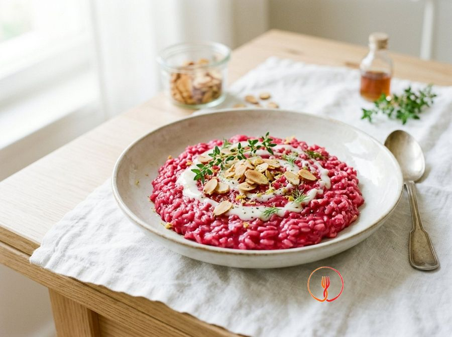

Beetroot Risotto with Almond Cream
A risotto with a vibrant fuchsia colour, perfect for special occasions despite being very low cost. Almond butter replaces dairy butter for a gourmet vegan finish.
Ingredients
- Carnaroli or Arborio rice (Premium Italian risotto rice)320 g
- Pre-cooked beetroot250 g
- Almond butter (100% almonds)30 g
- Brown onion1 pcs
- Vegetable stock1.2 l
- Cider vinegar15 ml
- Flaked almonds20 g
Allergens
Tree nuts, Celery
Method
- Blend the pre-cooked beetroot with a splash of stock until it becomes a very fine, velvety purée.
- Finely chop the onion and let it soften with a tablespoon of oil and one of stock for 5 minutes over a very low heat.
- Dry-toast the rice in the pot for 2 minutes until the grains become translucent and hot to the touch.
- Deglaze with the cider vinegar (replacing wine for a fresher note) and let it evaporate completely.
- Start adding the hot stock one ladle at a time, waiting for the previous one to be absorbed.
- Halfway through cooking (after about 8 minutes), add the beetroot purée, stirring vigorously to even out the colour.
- Bring the rice to the desired texture, keeping it 'all'onda' (creamy and fluid) with the addition of the last ladle of stock.
- Turn off the heat and beat in the almond butter, which will provide richness and an irresistible toasted note.
- Serve with the flaked almonds on top to provide a crunchy note that contrasts with the softness of the rice.
Nutrition facts (estimate)
| Per serving (459 g) | Per 100 g | |
|---|---|---|
| Energy | 1841 kJ / 440.0 kcal | 401.1 kJ / 95.9 kcal |
| Protein | 9.0 g | 2.0 g |
| Carbohydrates | 74.0 g | 16.1 g |
| of which sugars | – g | – g |
| Fat | 11.0 g | 2.4 g |
| of which saturates | – g | – g |
| Fibre | – g | – g |
| Salt | – g | – g |
AI estimates based on average CREA / USDA data: indicative only, not a substitute for medical or dietitian advice.
Open the recipe in the app for the shopping list, ingredient sheets and nearby shops.